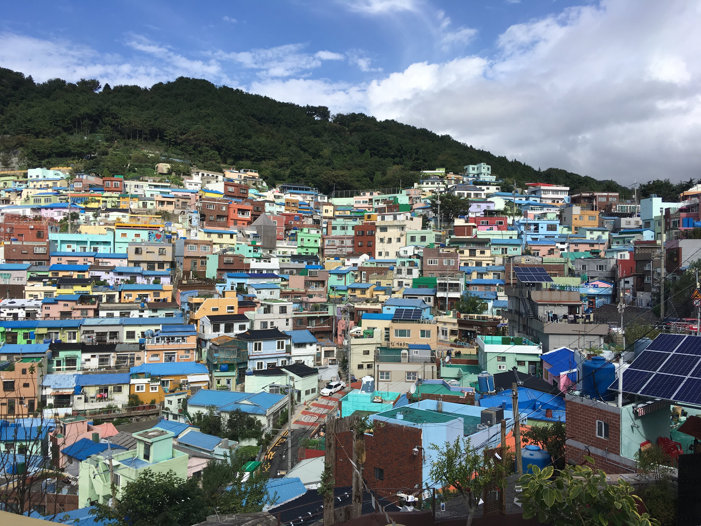
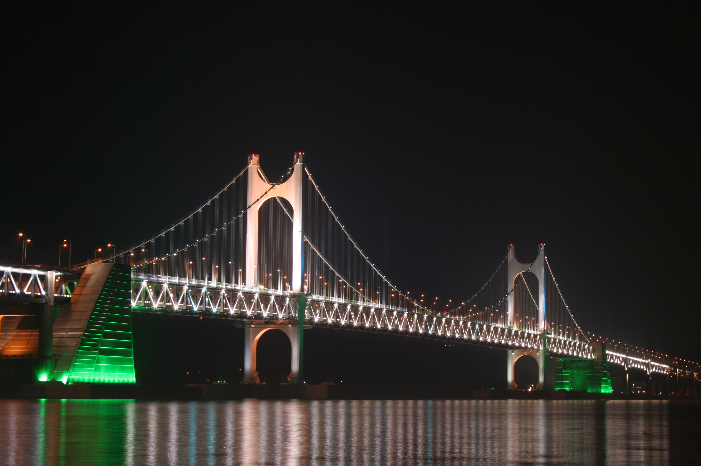
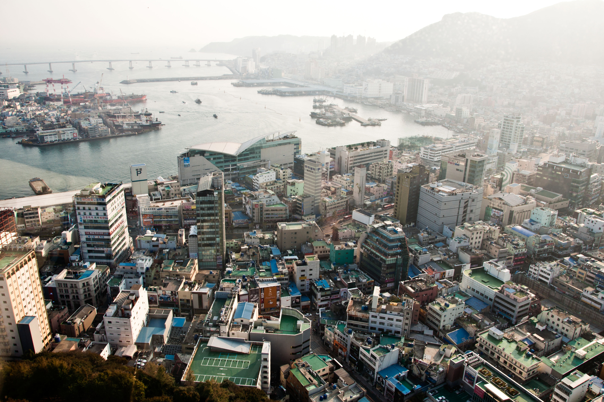
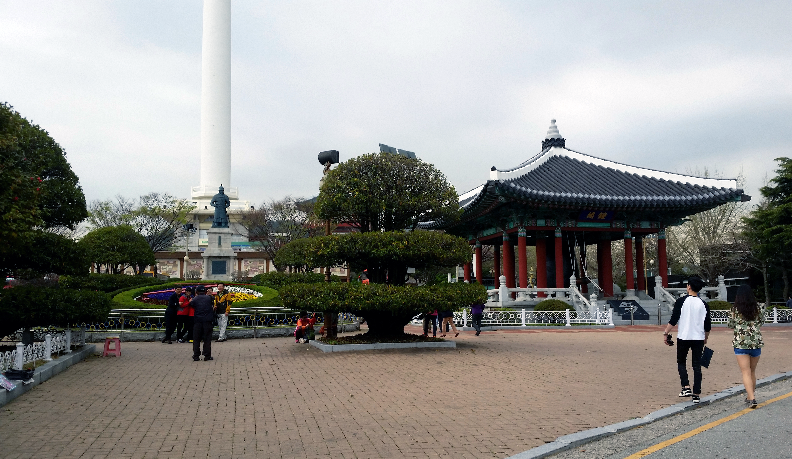
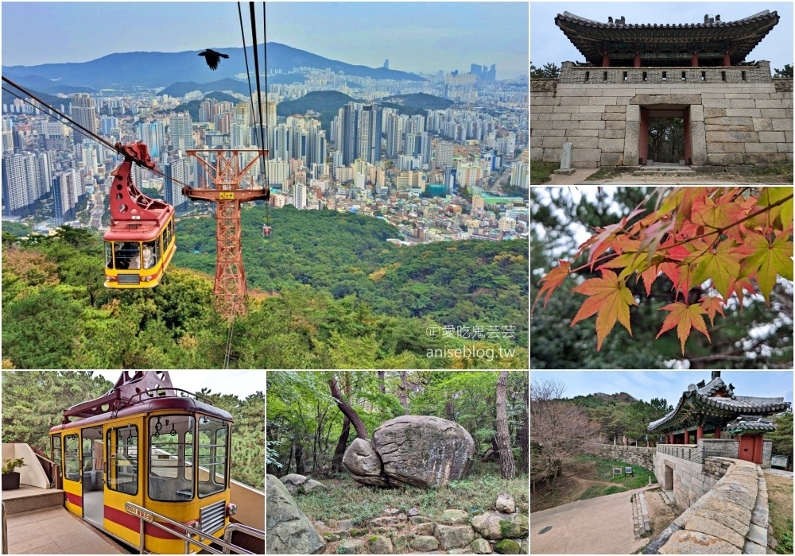
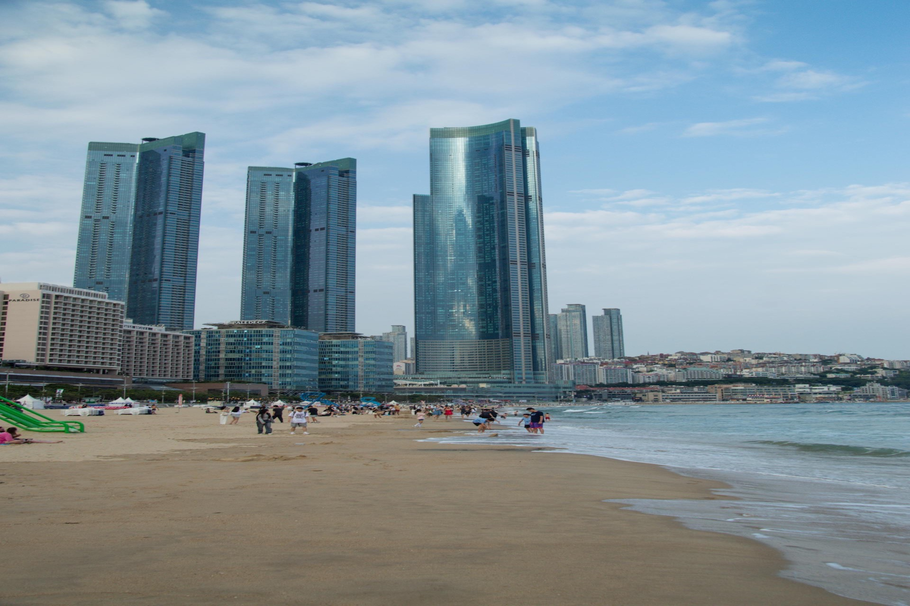
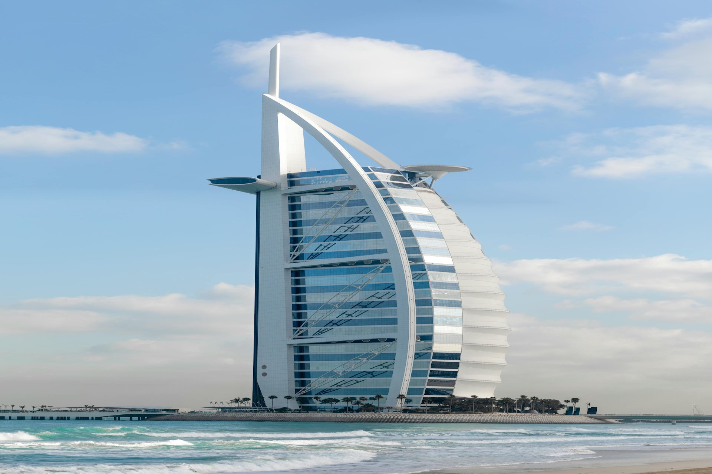

甘川文化村
📍 沙上區
韓版聖托里尼，彩色階梯與壁畫構成的藝術村落。穿梭小巷，處處是惊喜。

海雲台海水浴場
📍 海雲台區
釜山最知名海灘，秋日人潮散去，海風涼爽，沙灘寂靜，夕陽更顯溫柔。

廣安里海水浴場
📍 水營區
廣安大橋聞名，小火車賞夕陽，秋天涼爽的夜晚格外浪漫。

海岸鐵道（膠囊小火車）
📍 水營區
沿海岸線行駛的彩色膠囊小火車，秋天涼爽的天氣裡，景色更清新壯觀。

札嘎其魚市場
📍 南浦洞區
韓國最大魚市場，秋天螃蟹、鮑魚最肥美。海鮮愛好者的天堂。

影島太宗台
📍 影島區
懸崖峭壁與無敵海景，秋天健行舒適愜意，景觀台俯瞰釜山港。

松島海上纜車
📍 西區
韓國最長海上纜車，俯瞰松島海水浴場和海岸線，秋景壯闊。

金剛公園
📍 金井區
乘金剛纜車登金井山賞滿山紅葉，天氣晴朗時可俯瞰釜山全景。

梵魚寺
📍 金井區
禪意山林中的賞楓名剎，秋季銀杏與紅葉相映，步道清幽莊嚴。
釜山塔（龍頭山公園）
📍 南浦洞區
俯瞰秋色釜山最佳點，龍頭山公園銀杏+楓葉，夜景尤其動人。

海雲台（秋日海灘）
📍 海雲台區
秋天的海雲台沙灘人潮散去，漫步沙灘，靜賞秋日夕陽。
松島海水浴場
📍 西區
結合沙灘與纜車的複合型海灘，秋日海風清涼，海水湛藍。

多大浦海水浴場
📍 江西區
以日落音樂噴泉聞名，秋季傍晚的噴泉表演配合夕陽，格外浪漫。

金井山城
📍 金井區
古城牆賞楓秘境，秋季楓葉環繞古城牆，遊客少，風景絕美。

洛東江河口生態公園
📍 江西區
秋季候鳥遷徙季節，數千隻候鳥棲息，自然生態愛好者的天堂。
龜浦山洞壁畫村
📍 北區
色彩繽紛的藝術壁畫村，秋日背景讓壁畫更顯生動，活潑好拍。

BEXCO 發現帳篷
📍 海雲台區
獨特的帳篷式建築地標，釜山國際會議中心，現代建築愛好者必訪。

新世紀福音戰士橋
📍 影島區
釜山最新地標橋樑，以新世紀福音戰士為主題，動漫迷的朝聖地。